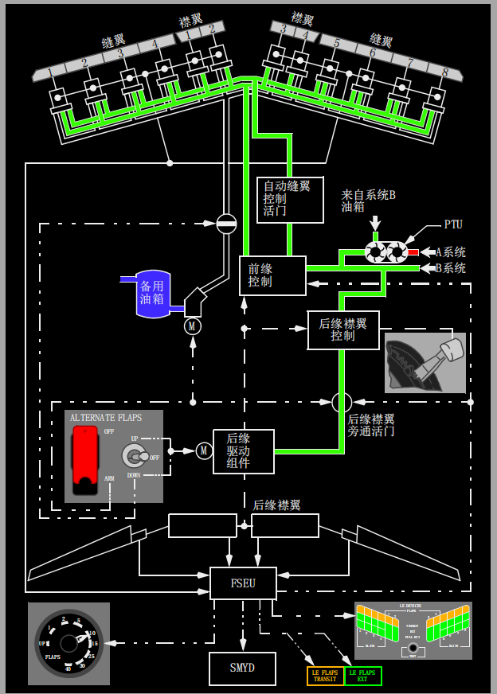

1 襟翼(FLAP)手柄
• 选择襟翼控制活门的位置，向襟翼驱动组件提供液压
• 通过选择后缘(TE)襟翼位置来决定前缘(LE)装置的位置
• 襟翼手柄位于30和40时将预位襟翼卸载系统。(选型)
• 襟翼手柄位于10, 15, 25, 30和40时将预位襟翼卸载系统。(选型)
2 襟翼卡槽
防止襟翼手柄意外超出如下范围：
• 位置1 -
检查单发复飞时的襟翼位置
• 位置15 -
检查正常复飞时的襟翼位置。
3 襟翼位置指示器
• 指示左和右后缘襟翼位置
• 提供后缘襟翼不对称和歪斜指示。
4 襟翼限制(FLAPS LIMIT)标牌
指示每一襟翼设置的最大速度。
襟翼和缝翼
襟翼和缝翼是增升装置，它们能在起飞、低速机动和着陆时增加机翼升力并降低失速速度。
前缘装置包括四片襟翼和八片缝翼，
即：每台发动机内侧有两片襟翼，外侧有四片缝翼。
根据后缘襟翼的设置，缝翼放出以形成一个密封的或开缝式的前缘。
后缘装置由每台发动机内侧和外侧的两片开缝式襟翼组成。
后缘襟翼位于1-15可增加升力；
位于15-40时可增加升力和阻力。
正常着陆襟翼位置是15、30和40。
对于那些需要考虑进近爬升性能的机场，通常限制在襟翼15。
当选择着陆襟翼位置时，必须考虑跑道长度和状况。
为防止在高高度上由于马赫数较大产生过大的结构载荷，20,000英尺以上不应尝试放襟翼。
襟翼和缝翼收放顺序
前缘装置和后缘襟翼的放出和收回通常由液压系统B提供动力。
当襟翼手柄在UP卡位时，所有的襟翼和前缘装置都被指令到收回或收上位置。
后移动襟翼手柄可选择襟翼位置1、2、5、10、15、25、30或40。
前缘装置随后缘襟翼的放出而按顺序放出。
当襟翼手柄从UP位移到1、2或5位时(或选型到1、2、5、10、15或25位时),后缘襟翼放出至指令位置并且前缘：
• 襟翼展开到完全放出位置，且
• 缝翼展开到放出位置。
• 收上时，前缘装置的顺序则相反。
机械卡槽可防止在单发复飞情况下襟翼手柄意外移至超过襟翼1，正常复飞情况下意外移至超过襟翼15。
中央仪表板上的指示灯提供整个前缘装置的位置状态。
后顶板上的前缘装置(LE DEVICES)信信号牌指示各个襟翼和缝翼的位置。
襟翼卸载
襟翼/缝翼电子组件(FSEU)提供后缘襟翼卸载功能，防止襟翼空气载荷过大。
此功能仅在襟翼10、15、25、30和40时才起作用。(选型)
襟翼手柄(FLAP)位置不移动，但襟翼位置指示器显示襟翼收起和重新放出。
当襟翼设在40时，后缘襟翼:
• 空速超过163节，收至30
• 空速减小到158节以下时，再次放出。
当襟翼设在30时，后缘襟翼:
• 空速超过176节，收至25
• 空速减小到171节以下时，再次放出。
当襟翼设在25时，后缘襟翼:
• 空速超过191节，收至15
• 空速减小到186节以下时，再次放出。
当襟翼设在15时，后缘襟翼:
• 空速超过201节，收至10
• 空速减小到196节以下时，再次放出。
当襟翼设在10时，后缘襟翼:
• 空速超过211节，收至5
• 空速减小到206节以下时，再次放出。
自动缝翼:
通常由液压系统B为自动缝翼操作提供动力。
如果从容量较高的B系统发动机驱动泵中感应到失压，则通过动力转换组件(PTU)由系统A提供备用动力源。
PTU使用A系统的压力来驱动一个液压动力泵为B系统增压，以进行自动缝翼操作。
襟翼位于1、2、5、10、15和25时，自动缝翼功能可用，(选型)
如果飞机接近失速条件，该功能将使前缘缝翼移动至完全放出位。
自动缝翼系统的设计是为了在起飞或进近着陆期间的大迎角条件下，增强飞机的失速特性。
当后缘襟翼选择到1至25时，前缘缝翼在放出位置。
当飞机接近失速角度时，在触发抖杆之前，缝翼自动开始向完全放出位置移动。
当俯仰角度充分减小至失速临界姿态以下时，缝翼又回到放出位置。
备用放出
在B液压系统失效的情况下，可用备用方式放出前缘装置，以及放出和收回后缘襟翼。
可通过两个备用襟翼电门电动操作后缘襟翼。
带护盖的备用襟翼(ALTERNATE FLAPS)主电门关闭襟翼旁通活门，以防止液压锁定襟翼驱动组件并预位备用襟翼位置电门。
备用襟翼(ALTERNATE FLAPS)位置电门控制一个可放出或收回后缘襟翼的电动马达。
在襟翼到达所需位置之前，该电门必须保持在下卡(DOWN)位 。
备用(电动)襟翼驱动系统不提供不对称或歪斜保护。
使用备用放襟翼时，由备用液压系统驱动前缘(LE)襟翼和缝翼到完全放出的位置。
在此情况下，备用襟翼(ALTERNATE FLAPS)主电门为向备用泵接通电源，备用襟翼(ALTERNATE FLAPS)位置电门瞬时保持在压下位，使前缘装置完全放出。
Note: 前缘装置不能通过备用液压系统收起。

不对称和歪斜探测及保护:
襟缝翼电子组件(FSEU)持续监控机翼前缘和后缘大升力装置的位置。
如果一侧机翼的襟翼与另一侧机翼对称位置的襟翼没有对齐，这就是不对称。
如果对称的后缘（TE）襟翼没有以同样的速率工作而造成收放时面板扭曲，即为歪斜情况如果出现歪斜，
FSEU会通过襟翼对称自动保护防止飞机偏转。
前缘装置位置不正确指示:
机翼前缘位置指示来自PSEU。
当FSEU探测到前缘装置位置不正确时，前缘襟翼过渡(LE FLAPS TRANSIT)指示灯仍保持亮，且在前缘装置(LEDEVICES)信号牌面板上显示下列指示之一：
• TRANSIT(琥珀色) - 前缘装置在过渡中，或不在选定位置
• EXT(绿色) - 前缘缝翼和襟翼在放出位置，或在选定位置
• FULL EXT(绿色) - 前缘缝翼在完全放出位置
• 无指示灯亮 - 前缘装置在收回位置。
非指令性移动探测、保护和显示
襟缝翼电子组件(FSEU)对前缘装置或后缘襟翼提供非指令性移动的保护。
前缘非指令性运动
当不存在后缘襟翼位置或自动缝翼指令并且出现下列情况时，探测到非指令性运动:
• 一侧机翼上的两片前缘襟翼移动，或
• 一侧机翼上的两片或两片以上缝翼移动。
FSEU关闭前缘控制装置，并使琥珀色前缘襟翼过渡(LE FLAPS TRANSIT)指示灯亮 。
另外，为防止巡航时前缘装置发生非指令性运动，FSEU保持收上管路中的压力，并且为放出和全放出管路释压。